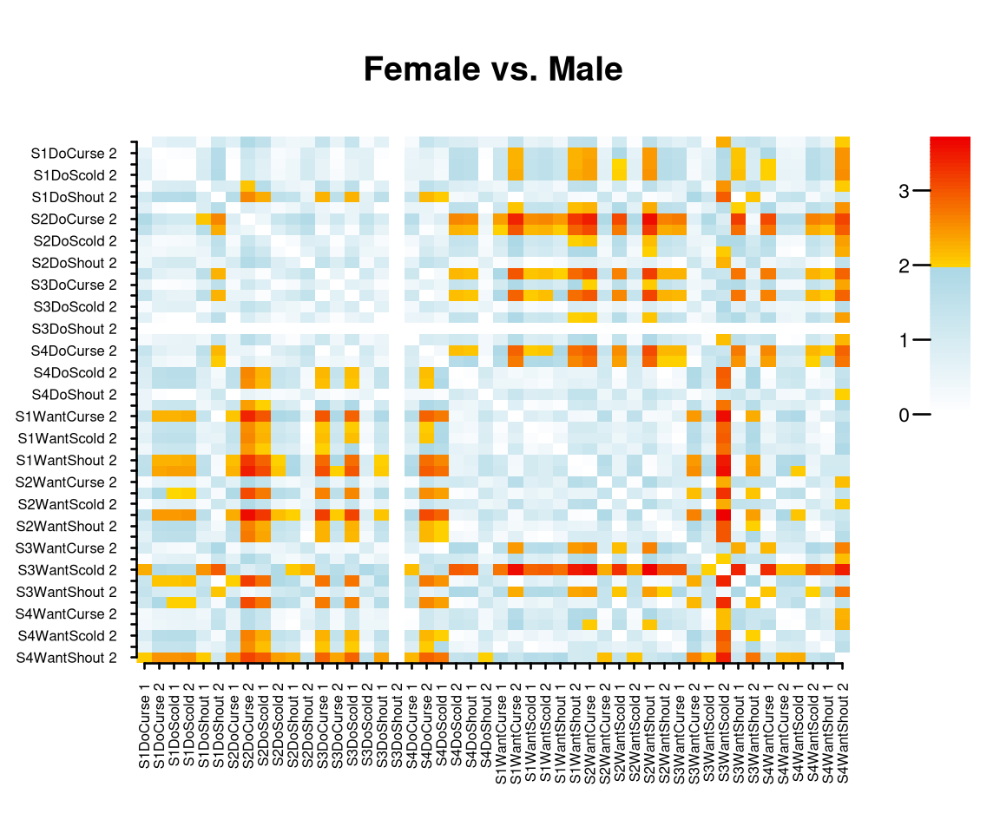

Exploring Differential Items Functioning with Dexter
Timo Bechger
2021-08-25
Source:vignettes/DIF_vignette.Rmd
DIF_vignette.RmdTest Differential Items Functioning
Based on the theory given in Bechger and Maris (2015), the function DIF() tests for differential items function (DIF) under an extended nominal response model. We illustrate how it works using the verbal aggression data.
library(dexter)
library(dplyr)
db = start_new_project(verbAggrRules, ":memory:", person_properties=list(gender=""))
add_booklet(db, verbAggrData, "data")
add_item_properties(db, verbAggrProperties)Gender is available as a discrete covariate which defines two groups: male and female respondents. We first test whether there is DIF.
dif_gender = DIF(db, "gender")
dif_gender## Test for DIF: Chi-square = 114.752, df = 47, p = < 0.0006The results shows that there is DIF hence it makes sense to look further to see what is going on. To this aim, we look at the relative positions of the item categories in the two groups.
Exploring DIF
Consider a plot of the ability scale in each of the two groups. 
The plot show the ability scale in each group and the location of the score categories of three of the items indicated by their labels. The ability scale is drawn without numbers because the origin is arbitrary but it does show us the relative locations of the item categories as they are estimated from the data.
On first sight, we would conclude that the locations of the item categories are clearly different. Now we wish to test whether, for each pair of locations whether this is indeed the case or whether the differences we see are due to chance. The simplest way to do this is to plot the output of the DIF function.
plot(dif_gender)
This produces an image plot of a matrix of differences between groups of the relative positions of each pair of item categories. The entries are standardized and can be interpreted as normally distributed test statistics such that significance can be judged from the colors. It is clear, for instance that, across male and female respondents, the second category of the item S3WantScold has a different position relative to most other item-categories. Note that the matrix can be found in the output of the DIF function.
Limitations
As usual in DIF testing, the procedure we have described is exploratory and there is no guarantee that the results can be interpreted easily. Furthermore, the plots will become cluttered when there are many items. If possible, we therefore recommend to use the profile plots. Note that with three groups, the procedure can be applied to each pair of groups but this will not take us very far when there are many more groups.
Finally, note that sorting can help to make the picture more interpretable. For example, we can sort on ‘want’ versus ‘do’:

Now, we see that the DO-items among themselves keep their relative positions in the two groups.